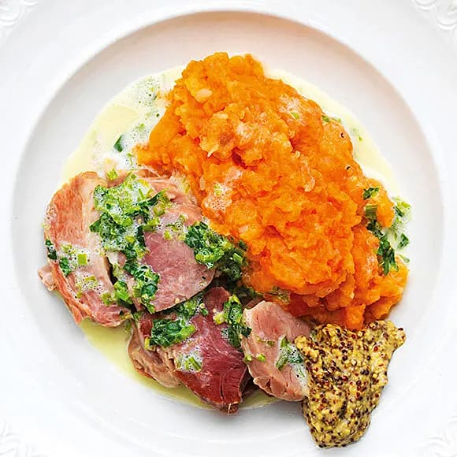

Rotmos med Fläsklägg - Mashed Rutabaga with Pork Leg

Description
Rutabaga, also known as swede or Swedish turnip, is the root of a cabbage plant. Before the import of the ubiquitous potato, the swede was the prime staple food of many parts of Sweden. The tuber has a sweet taste with a nice tang and fits perfectly with classic meat dishes, especially together with other tubers, such as in this recipe.
Ingredients
For the pork
- 1 pork leg
- 1 carrot
- 1 onion
- 6 allspice corns
- 1 bay leaf
For the mash
- 1 large Rutabaga
- 4 carrots
- 250g potatoes
- 1-3dl meat stock (from the pork)
- Salt
- Pepper
Steps
- Place the pork in a big cooking pot and cover it with water.
- Add the onion and carrot along with the spices and bring to a boil.
- Once it's boiling, reduce the heat and let it simmer for 2 hours.
- Peel the rutabaga, potatoes, and carrots and cut them into chunks.
- Boil the tubers in salted water for 20 minutes.
- Pour the water out and mash the tubers.
- Mix meat stock into the mash until it has a nice consistency.
- Add salt and pepper to taste.